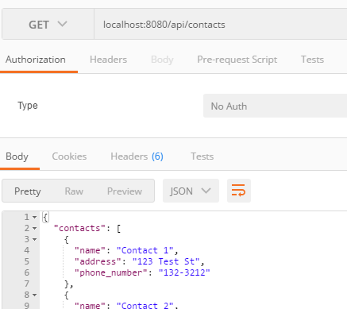
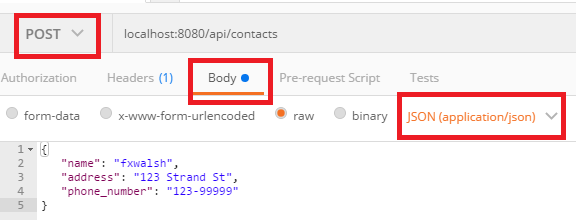
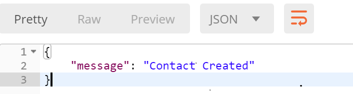
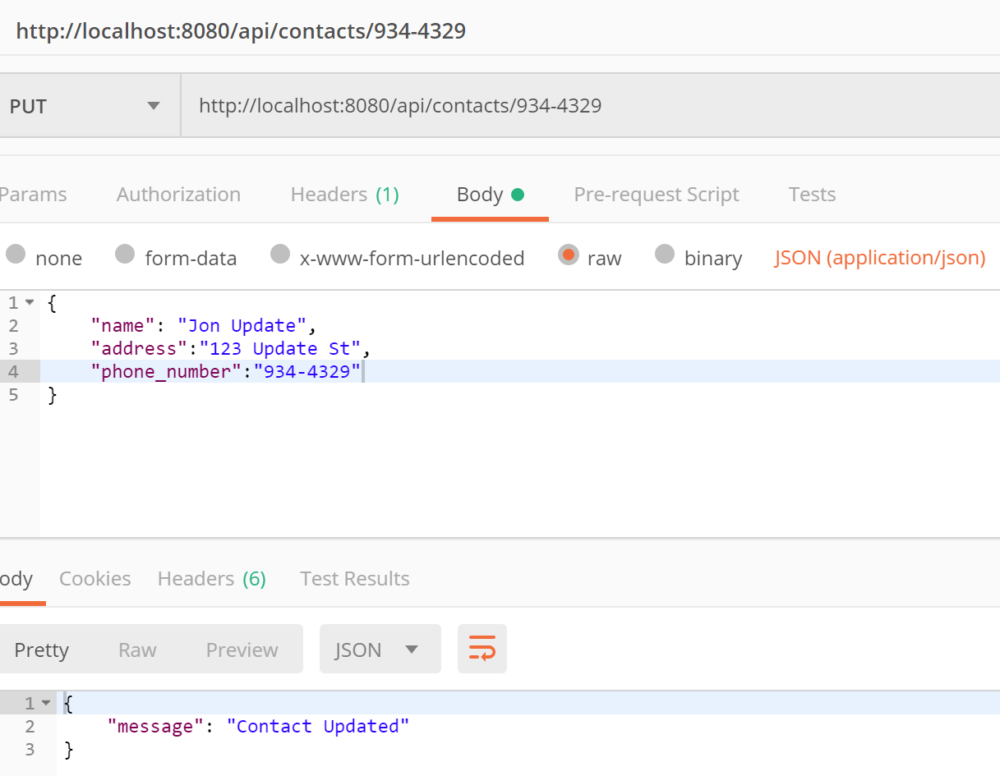
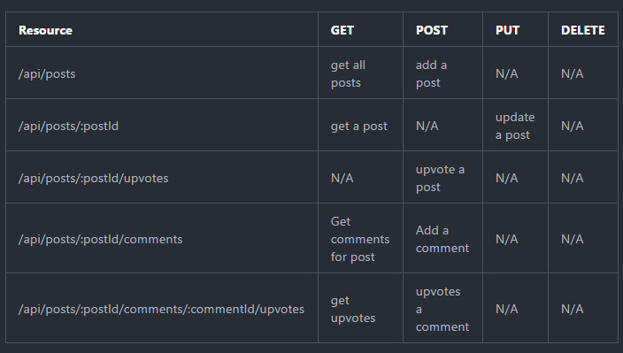

Node and Express 2
This lab uses Express implement APIs for the contact and Hacker News examples. In this lab you will use routing, parameterise URLs, and parsing Middleware.
Contacts API
We will enhance the Contacts API from last weeks lab. The following is a suggested API design for Contacts API.
API Design
We are going to create an API to manage contact data. The proposed API is as follows:

Set up
User the node-lab1 folder from last weeks lab as the starting point for this lab. If you do not have a solution for last weeks lab, you can get it from the labs folder in the examples repo at https://github.com/fxwalsh/ewd-examples-2019.git.
Install the following packages in your lab folder.
npm install --save body-parser npm install --save lodashgitBody-parser is a middleware that express can use to parse json.
- Update index.js to import and use body-parser in it's middleware stack.
import bodyParser from 'body-parser'; .... //configure body-parser app.use(bodyParser.json()); app.use(bodyParser.urlencoded()); ....
- Before we go any further, test the contacts API using your Rest client(e.g. Postman). This should be still working the same from last weeks lab. 
Add a Contact
- Now replace the contents of the contacts routing script, /api/contacts/index.js, with the following code.
import express from 'express';
import contacts from './contacts';
const router = express.Router();
router.get('/', (req, res) => {
res.send({ contacts: contacts });
});
router.post('/', (req, res) => {
let newContact = req.body;
if (newContact){
contacts.push({name: newContact.name, address : newContact.address, phone_number: newContact.phone_number }) ;
res.status(201).send({message: "Contact Created"});
}else{
res.status(400).send({message: "Unable to find Contact in request. No Contact Found in body"});
}
});
export default router;The above script adds a HTTP post route that gets a new contact data from the request body (req.body) and pushes it onto the contacts list.
- Test with your Rest Client. You will need to supply a JSON representation of the new client in the HTTP request body and make sure to select post as the HTTP method.

All going well, you should see a successfull reponse similar to the following:

Update a Contact
- Updating a contact involves replacing a contact with the new data in the HTTP request body. This corresponds to a HTTP PUT request. For now, use the phone number as the unique key to identify contacts. Add the following routing code to the end of /api/contacts/index.js.
// Update a contact
router.put('/:id', (req, res) => {
const key = req.params.id;
const updateContact = req.body;
const index = contacts.map((contact)=>{
return contact.phone_number;
}).indexOf(key);
if (index !== -1) {
contacts.splice(index, 1, {name: updateContact.name, address: updateContact.address,
phone_number: updateContact.phone_number});
res.status(200).send({message: 'Contact Updated'});
} else {
res.status(400).send({message: 'Unable to find Contact in request. No Contact Found in body'});
}
});Test using a Rest client by doing a HTTP PUT using the URL of an existing contact as follows and include a JSON document in the HTTP body to replace it.
Using Postman, you should see something similar to the following:

Delete a Contact
- Include the following function and test that the function removes a contact.(e.g. perform a HTTP DELETE on http://localhost:8080/api/contacts/934-4329). You do not need to provide any body data for a delete.
// Delete a contact
router.delete('/:id', (req, res) => {
const key = req.params.id;
const index = contacts.map((contact)=>{
return contact.phone_number;
}).indexOf(key);
if (index > -1) {
contacts.splice(index, 1);
res.status(200).send({message: `Deleted contact with phone_number: ${key}.`});
} else {
res.status(400).send({message: `Unable to find contact with phone_number: ${key}.`});
}
});Check by performing a Delete followed by a Get.
Commit it
Commit the changes you just made to your repo.
git add --all
git commit -m "added routing for add,update,delete contact"Hacker News API
Now we will create an API for Hacker News. Hacker News is a social news website focusing on computer science and entrepreneurship. In general, content that can be submitted is defined as "anything that gratifies one's intellectual curiosity".The following is a suggested API design for Hacker News Posts.
Note that the URL parameters arepreceeded by a colon(":")

Set up
- Create a new posts directory in the api directory for the Hacker News API scripts.
+api
+posts- In /api/posts, create two new javascript files, stubAPI.js and index.js.:
+api
+posts
|- stubAPI.js
|- index.jsStubAPI.js
- The stubAPI.js will take the place of the Mongo database for the time being. In stubAPI.js, enter the following code:
import _ from 'lodash';
const posts = [
{id: 1,
title: 'India - Tiger population sees 30% increase.',
link: 'http://www.bbc.com/news/world-asia-30896028',
username: 'jbloggs',
comments: [],
upvotes: 10,
},
{
id: 2,
title: 'The button that is not.',
link: 'http://blog.nuclearsecrecy.com/2014/12/15/button-isnt/',
username: 'notme',
comments: [],
upvotes: 12,
},
{
id: 3,
title: 'Google Nears $1B Investment in SpaceX',
link: null,
username: 'notme',
comments: [],
upvotes: 12,
},
{
id: 4,
title: 'Coinbase Raises $75M from DFJ Growth, USAA, and More',
link: 'http://blog.coinbase.com/post/108642362357/coinbase-raises-75m-from-dfj-growth-usaa-nyse',
username: 'psmith',
comments: [],
upvotes: 2,
},
];
const stubAPI = {
getAll: () => {
return posts;
},
add: (t, l) => {
if (!(t && l)) return false;
let id = 1;
const last = _.last(posts);
if (last) {
id = last.id + 1;
}
let len = posts.length;
let newLen = posts.push({
'id': id,
'title': t, 'link': l, 'username': '', 'comments': [], 'upvotes': 0});
return newLen > len?id:-1;
},
upvote: (id) => {
const index = _.findIndex(posts,
(post) => {
return post.id == id;
} );
if (index !== -1) {
posts[index].upvotes += 1;
return true;
}
return false;
},
getPost: (id) => {
let result = null;
const index = _.findIndex(posts,
(post) => {
return post.id == id;
} );
if (index !== -1) {
result = posts[index];
}
return result;
},
addComment: (postId, c, n) => {
let result = false;
const post = stubAPI.getPost(postId);
let id = 1;
if (post) {
const last = _.last(post.comments);
if (last) {
id = last.id + 1;
}
post.comments.push({'id': id,
'comment': c, 'author': n, 'upvotes': 0} );
result = true;
}
return result;
},
upvoteComment: (postId, commentId) => {
let result = false;
const post = stubAPI.getPost(postId);
if (post) {
const index = _.findIndex(post.comments, (c) => {
return c.id == commentId;
});
if (index !== -1) {
post.comments[index].upvotes += 1;
result = true;
}
}
return result;
},
};
export default stubAPI;Routing
- We will use the same service to handle hacker news as well as contacts. We will need to add the a new route in index.js for Hacker News. Add the following statements to the top of index.js to import and use the hacker news routes.
import postsRouter from './api/posts';
......
app.use('/api/posts', postsRouter);Get and Post
Getting and posting posts is very similar to the Contacts API. Add the following to api/posts/index.js:
import express from 'express';
import stubAPI from './stubAPI';
const router = express.Router();
// get all posts
router.get('/', (req, res) => {
const posts = stubAPI.getAll();
res.send({posts: posts});
});
// Add a post
router.post('/', (req, res) => {
const newPost = req.body;
if (newPost && stubAPI.add(newPost.title, newPost.link)) {
return res.status(201).send({message: 'Posts Created'});
}
return res.status(400).send({message: 'Unable to find Post in request.'});
});
// get a post
router.get('/:id', (req, res) => {
const id = req.params.id;
const post = stubAPI.getPost(id);
if (post) {
return res.status(200).send(post);
}
return res.status(404).send({message: `Unable to find Post ${id}`});
});
export default router;- Save and test using your Rest client. Make sure any changes using POST are visible using GET on http://locahost:8080/api/posts
Upvotes and Comments.
- Add the following route to /api/posts/index.js to allow for post upvotes:
// upvote a post
router.post('/:id/upvote', (req, res) => {
const id = req.params.id;
if (stubAPI.upvote(id)) {
return res.status(200).send({message: `Post ${id} Upvoted`});
}
return res.status(404).send({message: `Unable to find Post ${id}`});
});The function extracts the :id parameter and uses it to upvote the corresponding post.
Test using your Rest client, making sure upvotes are recorded correctly.
Commit it
- Commit the changes you just made to your repo.
git add --all
git commit -m "added routing for hacker news API"Challenge
Examine and understand the code for adding a post and upvoting a post. Now try to implement adding and upvoting comments.
hint: an example comment would be
{"comment":"this is a great post!", "author":"fxwalsh"}. Refer to the API Design table for the correct parametised routing. The functions you will need from the stubAPI are addComment(postId, comment.comment, comment.author) and upvoteComment(postId, commentId).
Hooking up the React App.
We will now connect your Hacker News React App to the API. This step requires completion of the React labs.
System Architecture
We will keep using the create-react-app framework you were using previously. create-react-app provides a mechanism for working with an API server in development. We can have the development server proxy requests intended for our API server as follows:
The React app makes an API request to localhost:3000, the Webpack development server. The development server proxies that request to the API server. This will remove any Cross-Origin-Resource-Sharing (CORS) issues with the browser. For this to work we need to launch both the create-react-app dev server and the API server in order to run the app locally. We also need to get the react dev server to proxy requests to the Express API.
Copy the complete hackerNews app from it's current location and put it in the root of your Express API. It should look like this:

The proxy functionality requires the version of react-scripts to be greater than 0.8.5. Check this is the case by looking at the dependencies list in /hackernews/package.json.
Open a console window in the hackerNews folder and start the react app:
npm start
Check that the app functions as before. If it's not working then check the error messages if any.
Set up
Nodemon filter
We want the nodemon process to ignore any changes in the hackerNews folder as these will not affect the API. In the package.json file in the node app root folder (/package.json, update the scripts property to the following:
"scripts": {
"start": "nodemon --ignore hackerNews/* --exec babel-node index.js"
}Proxy Server
To have the React development server proxy our API requests to our Express API server, we need to add the following to the package.json file in the hackerNews folder (/hackerNewes/package.json).
...
"proxy":"http://localhost:8080",
...- You must restart your React app for the new proxy setting to take affect. The Webpack server should now forward any request for unknown resources coming into the Webpack server though to your Express app listening on port 8080.
JSX Linting
Check that your current linter will not recognise JSX syntax. This should be already the case from the previous lab. If not, install the relevant plugin:
Run
npm install --save-dev eslint-plugin-reactIf not already there, add
"plugins": ["react"]to your .eslintrc config file.
In your hackerNews folder, create a new .eslintrc.json file with the following contents:
{
"env": {
"browser": true,
"node": true
},
"globals": {
"React": true
},
"ecmaFeatures": {
"jsx": true
},
"plugins": [
"react"
]
}Axios
We will need to make http requests to the Express API from the React App. In the hackerNews folder, install axois.
npm install --save axiosAxios is a promise-based HTTP client for the browser and node.js. You will use it to make requests to the Express API.
Start both servers
You will need to now start both the react app server and the Express API at the same time. Open two separate command windowsin the hackerNews folder and the parent lab folder. Start the respective servers in both windows:
npm startYou should see both processes come to life. As before, they support 'hot code changes' so you should not have to restart the processes as you moake changes.
Integrate the Express Hacker News API
Currently the Hacker News app uses a stubAPI to mimic a real API. We need to replace this.
- create a new script in the hackerNews/src folder called api.js and enter the following code:
import axios from 'axios';
export const upvote = postId => {
return axios.post(`/api/posts/${postId}/upvote`)
.then(resp => resp.data);
};
export const getAll = () => {
return axios('/api/posts')
.then(resp => resp.data);
};
export const getPost = postId => {
return axios.get(`/api/posts/${postId}`)
.then(resp => resp.data);
};
export const add = (newTitle, newLink) => {
return axios.post('/api/posts', { title: newTitle, link: newLink })
.then(resp => resp.data);
};Notice how the routes match what we've implemented in the Express Hacker News API. The proxy property of the package.json provides the host information required to complete the request.
- In the
hackerNews/src, editApp.jsas follows: Replace theimport api from './dataStore/stubAPI'statement with the following.
import * as api from './api';- We are going to include posts as part of the HackerApp component state. In App.js, initialise the
stateand add thecomponentDidMount()method to the HackerApp component to initialise the posts from the Express API:
export default class App extends Component {
state = {posts: [{}]};
componentDidMount() {
api.getAll().then(resp => {
this.setState({
posts: resp.posts
});
}).catch(console.error);
};
...
...- Now replace the
renderfunction of the HackerApp component with the following code. This replaces the previous use of stubAPI with the new posts state retrieved from the api package.
...
render() {
const posts = _.sortBy(this.state.posts, post =>
post.upvotes);
return (
<div className="container">
<div className="row">
<div className="col-md-9 col-md-offset-1">
<NewsList posts={posts}
upvoteHandler={this.incrementUpvote} />
</div>
</div>
<div className="row">
<div className="col-md-9 col-md-offset-1">
<Form handleAdd={ this.addNewsItem } />
</div>
</div>
</div>
);
}
...Now have a look at the app in the browser. You should see the list of news items as before. This time, however, they are retrieved from the Express API. Try to add a new post. You'll notice nothing happens. Next we will update the addPost() method.
Adding a post
- Locate the
addNewsItem()function in the App component. Replace it with the following:
addNewsItem = (title, link) => {
api.add(title,link)
.then(resp => {
const newPost = {"id":resp.id,"title":title,"link":link,"upvotes":0, "comments":[]};
this.setState({posts: this.state.posts.concat([newPost])});
})
};This function calls the Express API which returns a promise. When the promise is fulfilled, then it pushes the new post onto the posts state property. The HackerApp should react to this state and call the render function again.
Check the app in the browser again. You should be able add new posts posts to the list.
You can also check, via the API directly, that the new posts are being created.
Upvoting a Post
The upvote will now cause errors if you try to use it at the moment. Replace the incrementUpvote function in the App compnent with the following:
incrementUpvote = (id) => {
api.upvote(id).then(resp=> {
var upvotedPost = _.find(this.state.posts, post=>post.id == id);
upvotedPost.upvotes++;
this.setState({})
}) ;
};Challenge
Review your progress so far. Use the same approach to accomplish the following:
- integrate the API with the comment page.
- Update the contactList app to use the API developed in this lab.